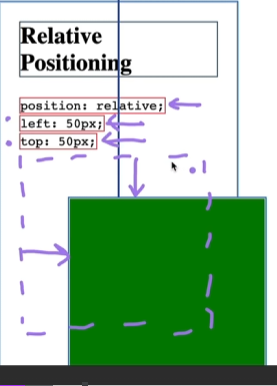

Learning HTML
June/10/2024

I will use this to document my journey to becoming a Web Developer.
As I learn new technologies (HTML, CSS, JavaScript), I will continually update and improve the design and functionality of this website.
By the end of this project, I aim to build a stunning portfolio website from the ground up— a project that will evolve alongside my entire coding career.
The First of every month, I will be backing up the files to showcase my progression down the road. You will be able to see my past versions
by clicking this button
I began learning: June 10, 2024
My first course: The Complete 2024 Web Development Bootcamp
June/10/2024
June/10/2024
CSS stands for "Cascading Style Sheets". Cascading Style Sheets (CSS) is a simple mechanism
for adding style (e.g., fonts, colors, spacing) to Web documents

Cascading Layers is a CSS feature lets us group styles in the order of their priority. This layering order is crucial in
resolving conflicts and establishing a clear hierarchy of styles. Here’s how cascade layers are ordered:

Position, Specificity, Type and importance.
A combinator is something that explains the relationship between the selectors.
A CSS selector can contain more than one simple selector. Between the simple selectors, we can include a combinator.
There are four different combinators in CSS:
Descendant Selector (space) , Child Selector (>) , Adjacent Sibling Selector (+) , General Sibling Selector (~)
Static Positioning: (HTML DEFAULT)
Relative Positioning: Position relative to its original position.

Absolute Positioning: Position relative to nearest positioned ancestor or top of left corner of webpage.
How its used:
h4 {
display: Inline-Block
}
The 3 Main Properties: Block, Inline, Inline-Block
The float CSS property places an element on the left or right side of its container, allowing text and inline elements to wrap around it.